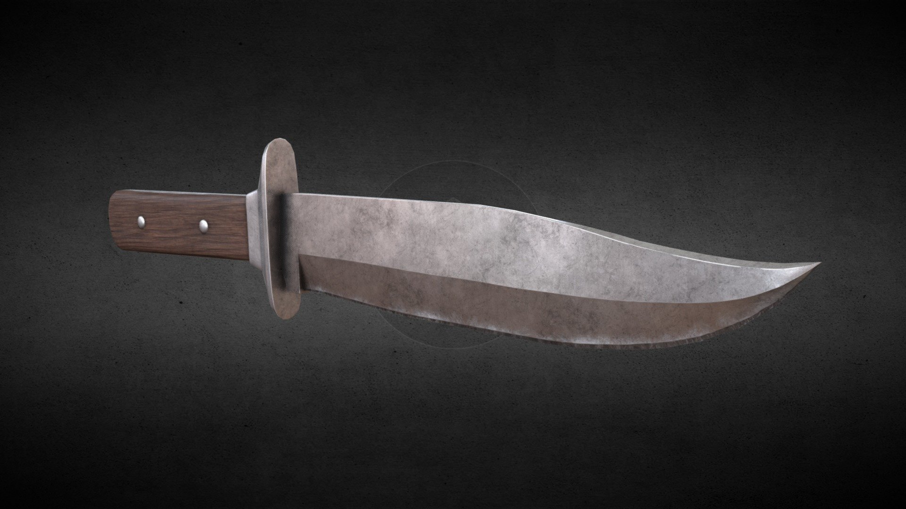
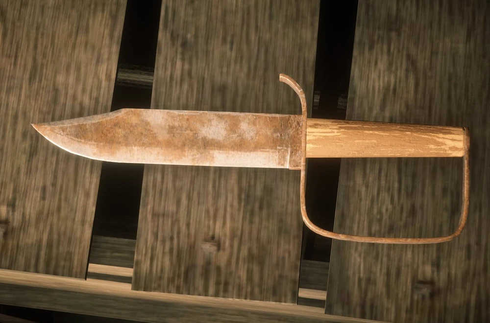
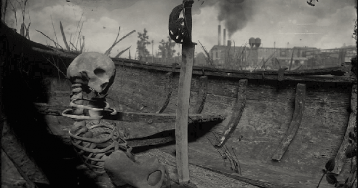

MELEE WEAPONS
They are an esencial tool for skinning animals. Some may provide an edge in melee fights. Unlike firearms their conditions never degrades. Neither do they depend on ammo. Making the a no cost ,no mainteinance set of weapons
Knife
This knife is avaliable from the very start. The player depends on this knife to skin animals in game. It is the only blade that will be used for skinning regardless of how many others you acquire. In the epilogue the knife changes but the concept remains the same
Civil war knife
It can be found insideatop a crate in the storage room underneath the small building to the right of the entrance at Fort Brennand in Roanoke Ridge.
Broken pirate sword
This sword can be found lodged inside an abandoned boat south of Saint Denis's southern bridge on one of the small islands.